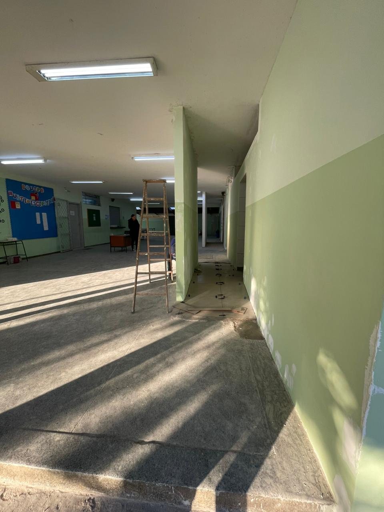

PRINCIPAIS ASSUNTOS
COMO ESTÁ FICANDO A REFORMA DOS BANHEIROS?

Em relação aos banheiros, a previsão para término do projeto é para daqui mais 1 (um) mês, porque o banheiro não foi apenas reformado, mas sim demolido e construído do zero. Os banheiros ficarão com um estilo de banheiro de shopping, com portas de alumínio, espelhos e lavatórios dentro do banheiro mesmo. O dos meninos vai contar com mictórios e será construído um banheiro para cadeirantes, por isso a construção irá demorar um pouco mais.
COMO VAI FICAR SOBRE OS CELULARES?
"Na verdade, não existe um regime militar dentro da escola, estamos apenas aplicando o manual feito pelo governo. Como ainda estamos no processo de adaptação, estamos aplicando regras aos poucos, regras que o próprio governo criou. Nós, policiais, nem estamos contratados como policiais, apenas como monitores, responsáveis por aplicar o manual que nos deram." (Sargento Neto)
NOVO REGIME DOS UNIFORMES: COMMO SERÁ DAQUI EM DIANTE?
Informações sobre o assunto.
AS NOTAS E AS FALTAS TAMBÉM TERÃO ALTERAÇÕES?
Informações sobre o assunto.
Deixe a sua reclamação aqui
Mas, para isso, é necessário que você faça seu cadastro com o e-mail da escola. Aviso que, se denunciarem seu comentário, sua conta será banida e só será resolvida com a pedagogia ou com o pessoal do grêmio estudantil.